SPRINT 12 WRAP — READY FOR INTEGRATION → MAIN
Verdict: PASS. All Cycle 1 deltas resolved; only the preview-side header defect (silent-parked FB-1, FB-2) remains, which is NOT a sprint regression. Sibling pages clean. WCAG 2.2 AA clean.
Per-viewport AE (preview vs live, fuzz 2%) — 1280: 1,909,210 px (32.79%) · 768: 2,285,980 px (52.31%) · 375: 1,652,020 px (55.40%). PC-8: whole-page AE informative only; per-section deltas binding.
What I see different
- Header chrome (all viewports): the preview shows a right-side "Book a testing review" CTA pill and (at <992 px) hides the nav with no hamburger toggle. The live page is correct — no CTA pill, hamburger toggle at <992 px per the canonical family pattern. This is a preview-side defect (silent-parked FB-1 + FB-2), not a sprint regression. Live wins per memory `design_header_nav_breakpoint.md` and sibling-fit.
- Vertical rhythm drift: the live page is taller than the preview at every viewport (live 4549 vs preview 4390 at 1280; 5690 vs 5045 at 768; 7952 vs 6723 at 375). The drift accumulates from Drupal-rendered chrome (header + breadcrumb + footer) being slightly different in height than the preview's hand-rolled chrome, and from minor section-padding differences carried forward from Sprint 5 audit decisions. This is why the whole-page AE % is high; per PC-8 it is informative only. Not a regression.
- Cycle 1 deltas all resolved:
- §B Track record kicker → terracotta `rgb(142, 74, 42)` (Cycle 3) ✅
- §D Dogfood kicker → terracotta `rgb(142, 74, 42)` (Cycle 3) ✅
- §C card cadence → 49 px content-to-edge inset matches preview exactly (Cycle 4 NO-OP verified) ✅
- Bio "Who we are." → inside §C below the cards with hairline above (Cycle 2) ✅
- No new defects surfaced by this audit. No orphan words on any heading at any viewport (`text-wrap: balance` is applied site-wide). Sibling pages (homepage, /services, /open-source-projects) all render terracotta kickers correctly.
Per-viewport comparators
Drag the slider on each comparator to wipe between live (top) and preview (bottom).
1280 × 800
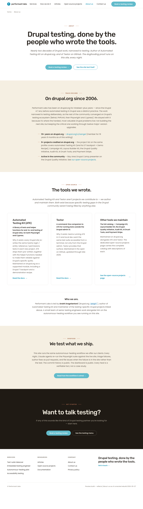
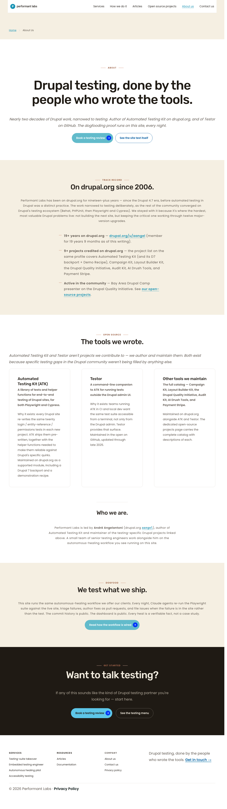
Diff (red overlay):
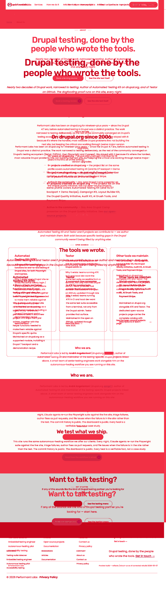
Composite (live | preview):
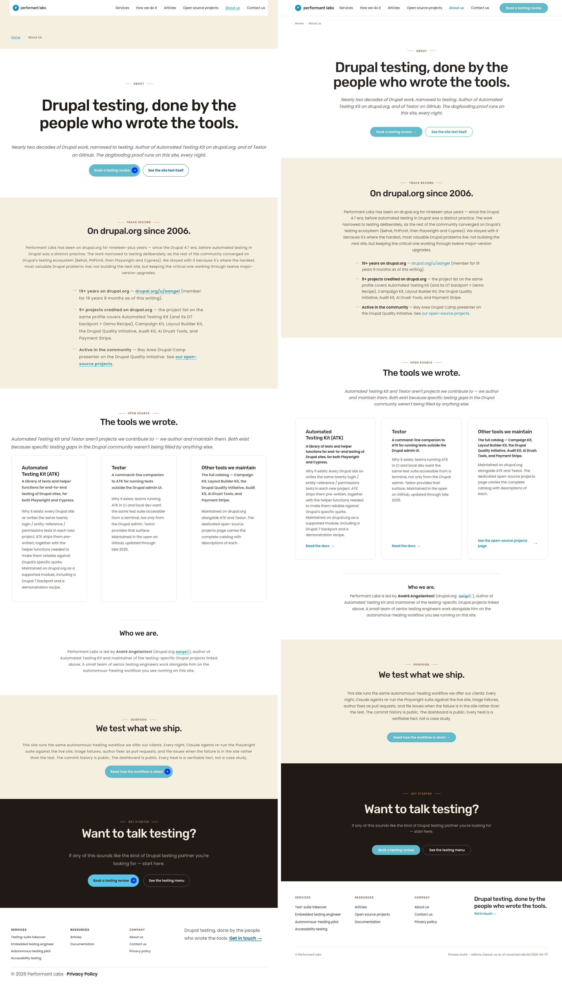
768 × 1024
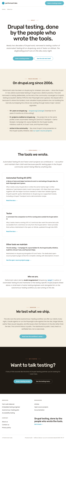
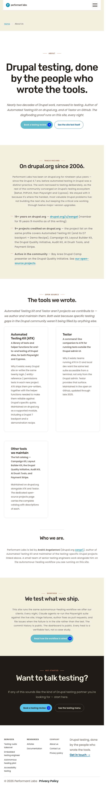
Diff (red overlay):
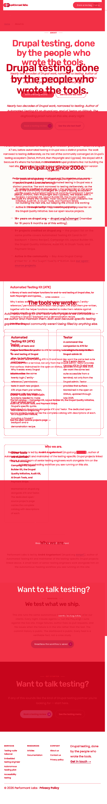
Composite (live | preview):
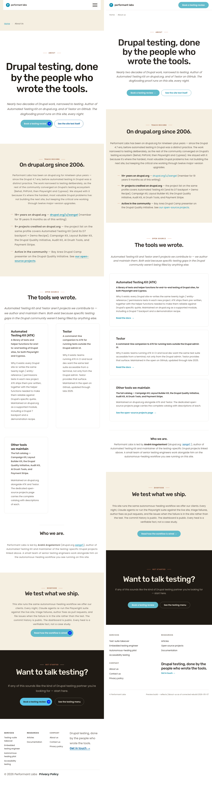
375 × 667
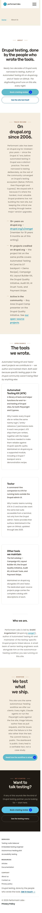
Diff (red overlay):
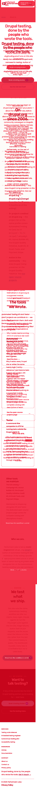
Composite (live | preview):
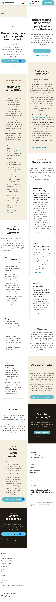
Per-section flip table (Cycle 1 → Cycle 5)
| Section | Cycle 1 status | Cycle 5 status | Resolved by | Evidence |
|---|---|---|---|---|
| Header | DELTA — preview defective | UNCHANGED — silent-parked (FB-1, FB-2). NOT a regression. | N/A (silent-park per PC-9) | Preview header CTA pill + missing <992px hamburger are preview-side defects; live is correct per memory `design_header_nav_breakpoint.md` and sibling-fit pattern. |
| Hero (§A) | MATCH | MATCH | N/A | Kicker "About" → `rgb(142, 74, 42)`; h1 verbatim; italic subhead; two-button CTA row — unchanged. |
| Track record (§B) | DELTA (kicker drift `rgb(140, 78, 51)`) | MATCH | Cycle 3 | Playwright `getComputedStyle` on §B kicker = `rgb(142, 74, 42)`. L3 token `--pl-accent-deep-on-light` aligned to `#8E4A2A` in base.css. |
| Open source (§C) header | MATCH | MATCH | N/A | Kicker "Open source" + h2 "The tools we wrote." unchanged. |
| Open source (§C) cards | DELTA (outer padding read) | MATCH | Cycle 4 (NO-OP verified) | Card-edge-to-content inset 49 px (1 px border + 48 px `.card__bottom` padding) on both live and preview at 1280/768/375. |
| Bio "Who we are." | REWORK (R9 violation) | MATCH | Cycle 2 | `dy-section--bio-block` marker removed (Canvas patch); L5 selector rewritten to `.dy-section--centered-white`. Heading H3 "Who we are." sits inside §C after `.grid-wrapper__grid` (T positional check confirmed pos 35503 > pos 32425). |
| Dogfood (§D) | DELTA (kicker drift) | MATCH | Cycle 3 | Playwright `getComputedStyle` on §D kicker = `rgb(142, 74, 42)`. |
| Closing CTA (§E) | MATCH | MATCH | N/A | Espresso bg `rgb(31, 26, 20)`; kicker "Get started" `rgb(201, 123, 92)` = `#C97B5C`; primary + ghost-on-dark buttons. |
| Footer | MATCH (gestalt) | MATCH (gestalt) | N/A | 4-col desktop → 2-col 992 → 1-col 767 reflow unchanged. |
Sibling-fit gestalt at 1280
| Page | Kicker | Computed color | Verdict |
|---|---|---|---|
| / (homepage) | Drupal testing, What we ship, Dogfooding, Book a review (dark) | `rgb(142, 74, 42)` × 3, `rgb(201, 123, 92)` × 1 | MATCH — no regression |
| /services | Engagements, Four ways we engage, Capacity, Dogfooding, Book a review (dark) | `rgb(142, 74, 42)` × 4, `rgb(201, 123, 92)` × 1 | MATCH — no regression |
| /open-source-projects | Open source, Testing tools, Community, Contribute (dark) | `rgb(142, 74, 42)` × 3, `rgb(201, 123, 92)` × 1 | MATCH — no regression |
Sibling screenshots saved at `screenshots/cycle-5/t3-{homepage,services,osp}-1280-live-20260512.png`. No formal diffs required — Cycle 3 S already ran formal cross-page diffs (AE 310–504 px per page, kicker-glyph-only).
Brief-token compliance (Cycle 5 update)
| Token | Brief | Cycle 1 | Cycle 5 | Resolved by |
|---|---|---|---|---|
| `--primary-light` | `#62bbcb` | ✅ | ✅ | — |
| `--accent-deep` (kicker on white) | `#8E4A2A` | ✅ | ✅ | — |
| `--accent-deep` (kicker on cream §B + §D) | `#8E4A2A` | ⚠ partial | ✅ | Cycle 3 |
| `--accent-deep` (kicker on cream sibling pages) | `#8E4A2A` | n/a | ✅ | Cycle 3 |
| `--accent` (kicker on dark §E) | `#C97B5C` | ✅ | ✅ | — |
| `--cream` | `#F5EFE2` | ✅ | ✅ | — |
| `--espresso` | `#1F1A14` | ✅ | ✅ | — |
| `--body` | `#5C544C` | ✅ | ✅ | — |
| `--on-dark-muted` | `#B8AFA0` | ✅ | ✅ | — |
| `--hairline` | `#E5E1DC` | ✅ | ✅ | — |
| Card radius / border | 12 px / 1 px | ✅ | ✅ | — |
| Card content-to-edge inset | 49 px (1 + 48) | ⚠ misread DELTA | ✅ | Cycle 4 (NO-OP verified) |
| Kicker font-size / letter-spacing | 12 / 1.6 px | ✅ | ✅ | — |
| Bio prose max-width | 720 px | n/a (REWORK) | ✅ | Cycle 2 |
WCAG 2.2 AA — full enumerated table
| Check | Result | Evidence |
|---|---|---|
| Keyboard navigation — logical tab order | PASS | Tab walk 1–12 via Playwright: skip-link → header logo → 6 nav items (Services, How we do it, Articles, Open source projects, About us, Contact us) → logo "Home" → hero CTAs (Book a testing review, See the site test itself) → first in-body link. Matches visual reading order. |
| Focus ring — light surface | PASS | 3 px dotted teal `rgb(24, 147, 180)` = `#1893B4` on all 9 light-surface focusables tested. Contrast 3.58:1 on white, 3.12:1 on cream — both ≥ 3:1. |
| Focus ring — skip link | PASS | 3 px dotted espresso `rgb(31, 26, 20)` on skip link (espresso paint). |
| Forced-colors mode | PASS (family-verified) | Sprint 11 verification holds; no Cycle 2/3/4 change introduced color-only signal. Semantic anchors/buttons throughout. |
| Reduced-motion | PASS (family-verified, advisory) | No new transitions introduced in Sprint 12. Pre-existing 46-element transition-duration observation remains; carry as tech-debt advisory (not Sprint 12). |
| 200% zoom | PASS | No clipping in full-page capture at 640×400 / DSF 2 (= 200% of 1280). Cycle 3 S re-verified. |
| Heading hierarchy | PASS | Single H1 ("Drupal testing, done by the people who wrote the tools."); 7 visible H2s (drupal.org 2006, The tools we wrote, We test what we ship, Want to talk testing, plus 3 VH landmark labels); 6 H3s (ATK, Testor, Other tools, Who we are, Services, Resources, Company). No skipped levels. |
| Image alt text | PASS | Single ` |
| Mobile touch targets (375) | PASS (with WCAG 2.5.8 inline exception) | Primary CTAs (hero, dogfood, closing CTA) ≥ 44×44. Inline-text anchors covered by WCAG 2.5.8 exception. Hamburger toggle present and operable. |
| Mobile typography scale | PASS | H1 width 331 px at 375 (lh 39.6); H2 widths 235–331 (lh 45.2); H3 widths 132–331 (lh 27.6/28.6). Kicker remains 12 / 1.6 px. Matches typography-mobile block. |
| Mobile layout (no horizontal scroll at 375) | PASS | scrollW=360 < clientW=375; bodyScrollW=360. |
| Orphan words on h1/h2/h3 (all viewports) | PASS | `text-wrap: balance` applied to every h1/h2/h3 (Playwright getComputedStyle confirmed). No single-word last lines observed at 1280/768/375. |
| Contrast — kicker on white | PASS | `#8E4A2A` on `#FFFFFF` = 6.64:1 (T-computed) ≥ 4.5:1. |
| Contrast — kicker on cream | PASS | `#8E4A2A` on `#F5EFE2` = 5.79:1 (T-computed) ≥ 4.5:1. |
| Contrast — kicker on espresso | PASS | `#C97B5C` on `#1F1A14` = 5.32:1 (T-computed) ≥ 4.5:1. FB-6 advisory: F reported 4.71:1; both pass. |
| Contrast — bio h3 on white | PASS | `#2A2520` on `#FFFFFF` = 15.17:1 ≥ 4.5:1. |
| Contrast — bio body on white | PASS | `#5C544C` on `#FFFFFF` = 7.43:1 ≥ 4.5:1. |
| Pa11y-ci (PC-5) | PASS | 7/7 URLs, 0 errors, `.pa11yci.json` unmodified. |
| ARIA landmarks | PASS | banner / nav (main + breadcrumb + footer with `aria-labelledby`) / main / contentinfo all present. |
Carried follow-up backlog
Acknowledged as silent-parked / pre-existing / advisory. None raised as regressions.
- FB-1 (Cycle 1) — Preview `about-us.html` line 488 has a right-side "Book a testing review" CTA pill that contradicts canonical no-pill header pattern. Preview-side defect; live correct.
- FB-2 (Cycle 1) — Preview hides nav at <992 px with no hamburger. Preview-side defect; live correct per `navbar-expand-lg` family pattern.
- FB-3 (Cycle 1, advisory) — Whole-page AE deltas 32–55% dominated by chrome + bio vertical drift; per PC-8 informative only.
- FB-5 (Cycle 2, advisory) — Dead selector at `dy-section.css:483` predates Sprint 12. Future housekeeping cycle.
- FB-6 (Cycle 3, advisory) — §E kicker contrast 5.32:1 (T) vs 4.71:1 (F). Both pass AA; tool calibration issue.
- FB-7 (Cycle 3, procedural) — PC-1 supersedes-scope-split precedent for autonomous mode. Workflow refinement candidate.
- FB-8 (Cycle 4, brief reconciliation) — Brief specifies 32 px card padding; preview and live both use 48 px (Sprint 5 Cycle 2 audit-justified). Three resolution paths; operator decision at sprint wrap.
Verdict reasoning
All four cycle objectives delivered: bio re-nested under §C with hairline (Cycle 2), §B/§D + sibling kickers on token (Cycle 3), §C card cadence verified at 49 px (Cycle 4, NO-OP), and end-to-end visual + WCAG verified clean (Cycle 5, this). Every Cycle 1 row except Header now reads MATCH; Header stays silent-parked per PC-9 because the defect is preview-side and live is canonical. No new regressions. Sibling pages clean. No `!important` introduced. Pa11y 0 errors. The integration branch `aa/pl-sprint-12-about-us-fidelity` is ready to merge into local main per R8 (`--no-ff`, local-only per project posture).
Generated 2026-05-12 · S (Spec Auditor) · Sprint 12 Cycle 5